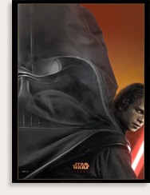
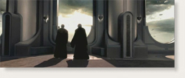

Whether you were a Hyperspace member or AOL user refreshing your browser frantically last Thursday, or a deeply rooted couch potato who caught it on MTV or Access Hollywood, or one of the millions who saw the trailer the way any Star Wars is best seen - on the biggest movie screen you can possibly find it on (in this case in front of Pixar's latest digitreat, The Incredibles), chances are you've seen your first real glimpse of footage from Episode III by now. And while (in the age of Jar-Jar) there now always seem to be doubting Thomases among us when it comes to anticipation of a new Star Wars film, this time out it seems like almost everyone who's seen the teaser trailer has walked away psyched.</p>
How could you not? I mean, the way they used ANH Obi-Wan's speech about the Old Republic and started to really tie the prequel trilogy together with images of everything from Qui-Gon to new images of Darth Vader was thrilling for Star Wars fans of any age. And then there's just all this new stuff to talk about (or not if you're trying to stay spoiler free). With respect to the spoiler free out there, I'll just say, OMG! Anakin with that look! And all that stuff in that place, with those things. And that thing that kept turning and turning, until, whoa. And those characters in that place, how about that! Not to mention how worried that person looked, and the one fighting with whoever that was. And how about Yoda! And those guys! And that fighter, and that bunch of aliens, and that new guy! And that flying thing with the other flying thing. And those two having it out, and those other two. And R2, and all that stuff in space. Oh, a what about that dude with that lightsaber. Sweet.</p>

<p>Yeah, the teaser is awesome. And now we all have quite a bit to chew on until the next trailer. So if you haven't checked it out yet, find it at the theater or on the Internet. Through the teaser, things you will see. Other places. The future, the past,...old friends long gone. Just steer clear of the cave.</p>